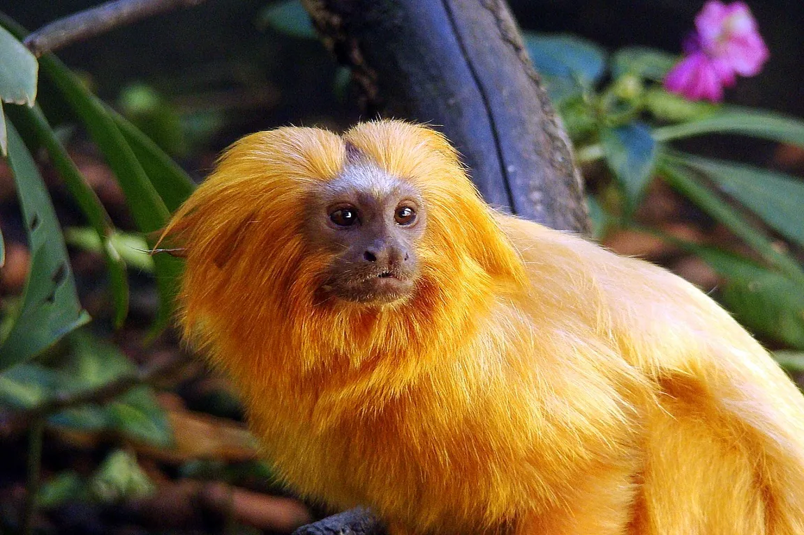

3 Informações sobre a Arara Azul

-
Habitat: O mico-leão-dourado é encontrado na Mata Atlântica do estado do Rio de Janeiro, no Brasil. Seu habitat natural são as florestas tropicais úmidas, principalmente em áreas de restinga e manguezais.
-
Características físicas: Os micos-leões-dourados são pequenos primatas, medindo cerca de 20 a 35 centímetros de comprimento e pesando entre 350 e 700 gramas. Sua pelagem é dourada e espessa, com uma juba característica em torno do rosto, que lhes confere o nome "leão-dourado". Têm mãos e pés ágeis e uma cauda longa que ajuda no equilíbrio.
-
Comportamento: Esses primatas são animais sociais e vivem em grupos familiares liderados por um casal reprodutor dominante. São animais diurnos e passam a maior parte do tempo pulando e escalando árvores em busca de alimentos, como frutas, insetos e pequenos vertebrados. A comunicação entre os micos-leões-dourados ocorre por meio de vocalizações e sinais visuais.